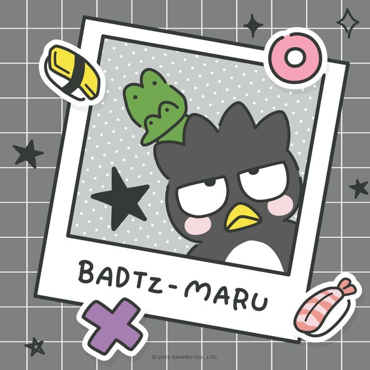
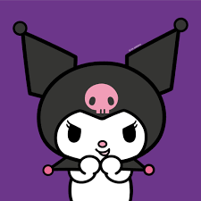
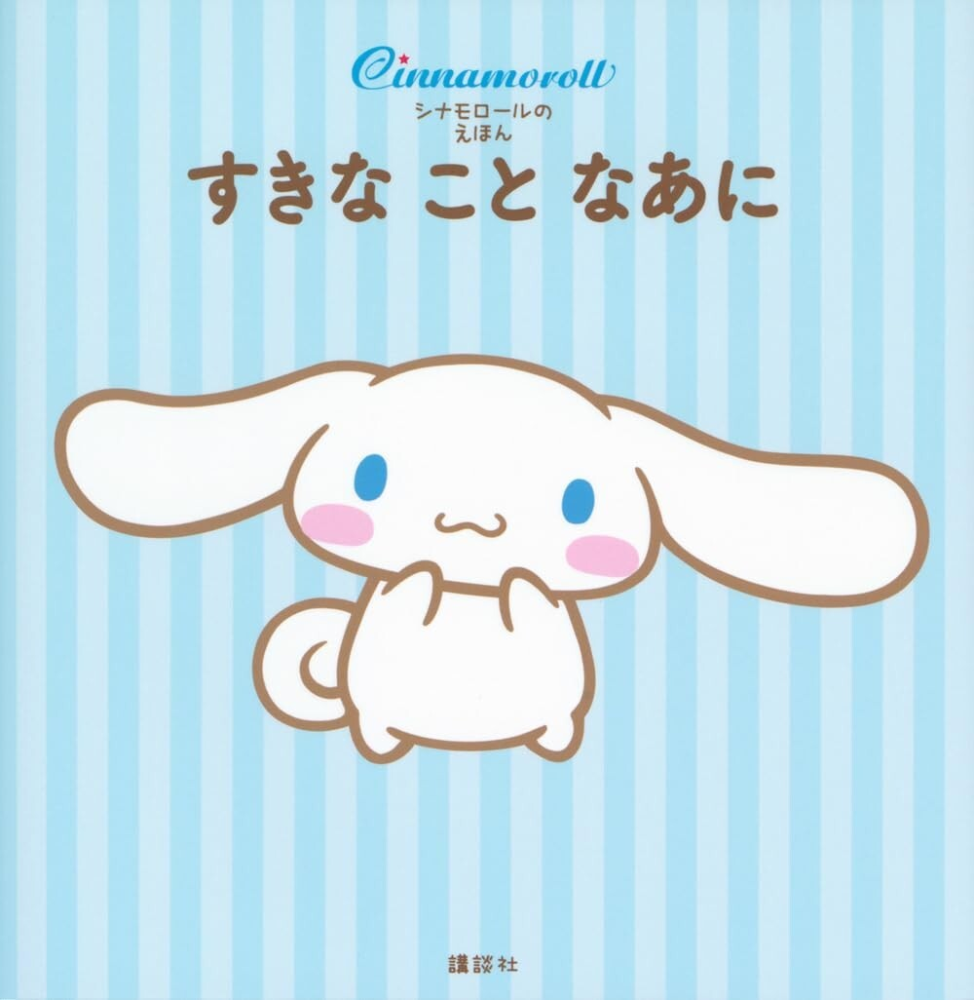

Badtz-Maru
Un pingüino con actitud rebelde pero con un buen corazón.

Gudetama
Un huevito muy perezoso que solo quiere seguir durmiendo.
Otros amigos del universo Sanrio

Kuromi
Traviesa, con estilo punk, pero muy encantadora.

Cinnamoroll
Un perrito blanquito y tímido que vuela con sus orejas.
Pase el mouse para ver el hover muejeje